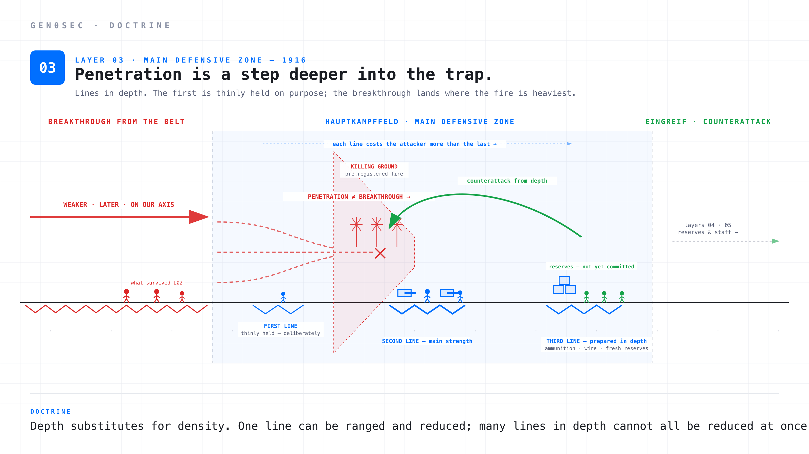
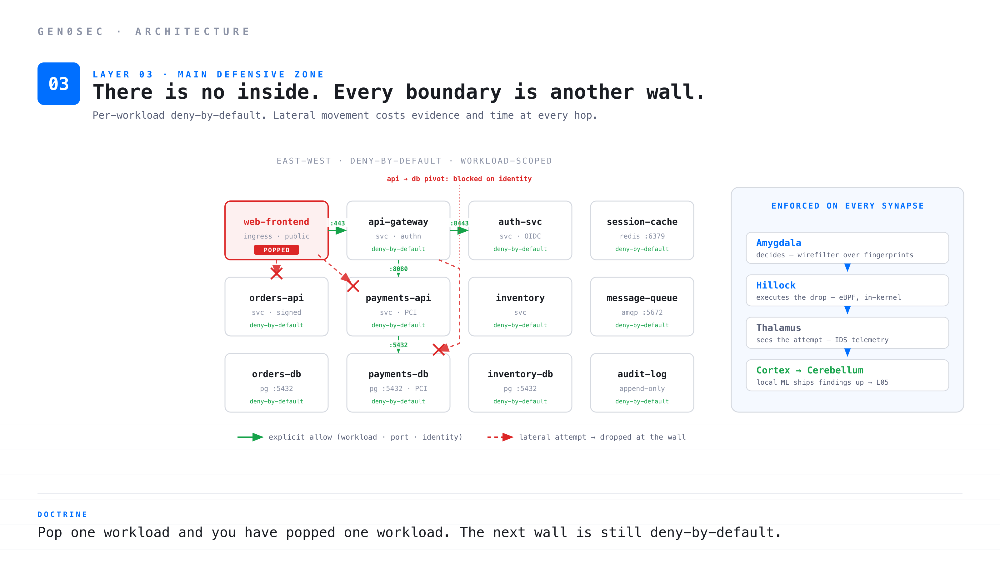
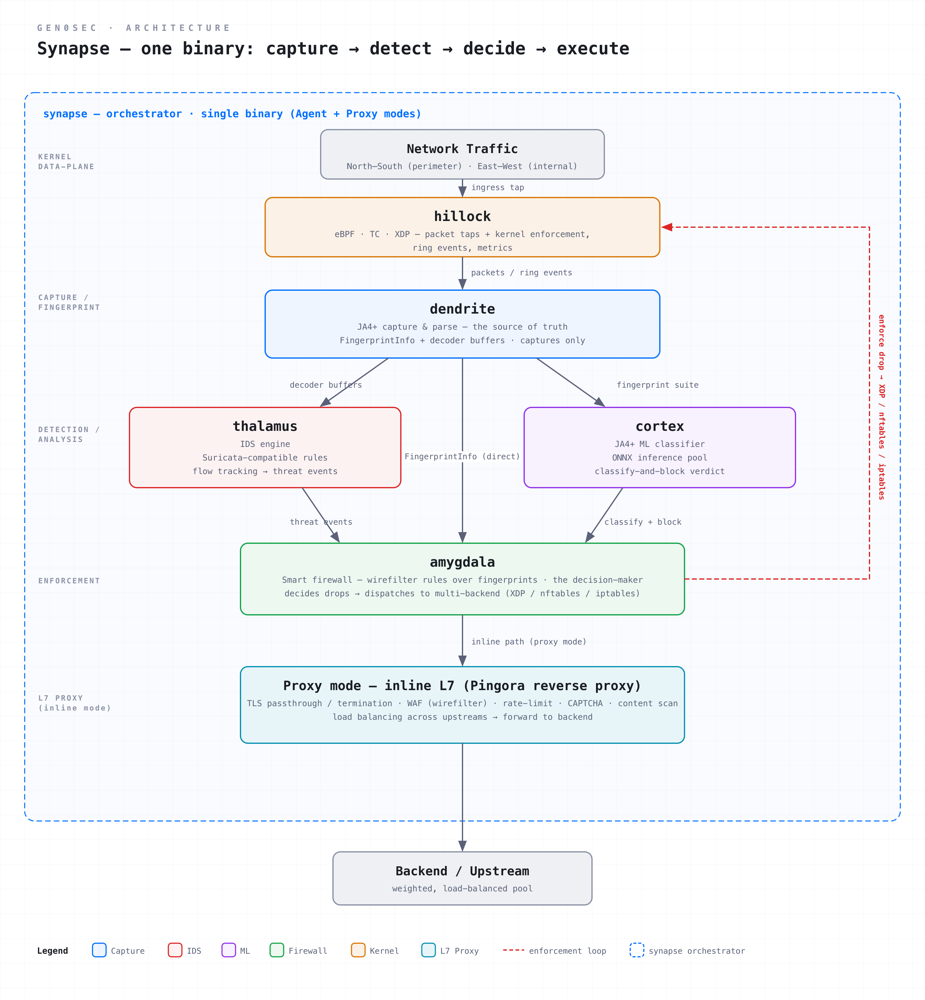
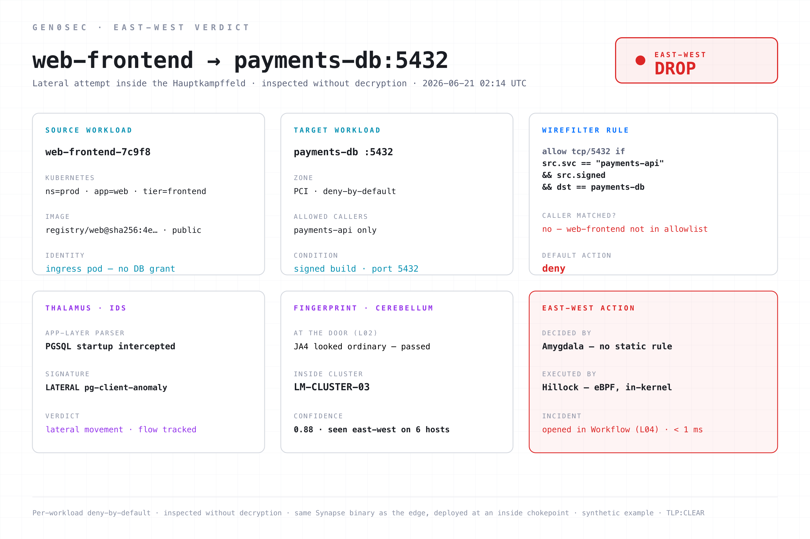

The Hauptkampffeld and modern depth: deep inspection, east-west microsegmentation, and why every workload boundary is another wall.
The Hauptkampffeld, the main battle zone, was where the German army planned to actually fight. The outpost line gave warning. The forward defensive belt slowed the attack. The main defensive zone bled it.
Geographically the zone was deep. The pre-1916 trench system had a single line of fortification. The elastic-defense version had multiple lines, layered to a depth measured in kilometres rather than metres. The first line was thinly held, often deliberately. The second line was the main strength. The third line was prepared in advance and stocked with ammunition, communication wire, and reserves who had not yet fired a shot. The whole zone was laid out to allow penetration without collapse.
The doctrine was about channelling. The attacker who broke through the first line was not free. He was now in a prepared killing area where the next line's machine guns had pre-registered fields of fire, the artillery was already laid on coordinates the attacker had to cross, and the German staff was preparing the counterattack from the depth he had just exposed himself to. Each line cost the attacker more than the previous one. Penetration was not victory. Penetration was a step deeper into the trap.
The Hauptkampffeld commander's job was to identify the Schwerpunkt, the point where the attacker had committed his weight. Then to make sure that point was the worst place for him to be. Channel the assault into the zone where the fire is heaviest. Pre-empt his ability to exploit a breakthrough by ensuring the breakthrough lands on a German trap. Use the natural geometry of the zone to dictate his choices.
The other key doctrinal point: depth substituted for density. A single line, no matter how strong, can be ranged by artillery and reduced. Multiple lines, distributed in depth, cannot all be reduced simultaneously. The attacker has to suppress the first line, advance, then suppress the second, then advance, then suppress the third. Each suppression is a fresh artillery preparation, a fresh logistic problem, and a fresh window for the defender to counterattack. Depth converts time into defensive advantage.
The clearest demonstration came at Cambrai. On 20 November 1917 the British launched the first massed-armour attack in history — over four hundred tanks, no preliminary bombardment, complete surprise — and tore a hole several kilometres deep into the German line in a single morning. On the old doctrine that would have been a catastrophe. It was not. The penetration ran into the depth: the forward line had been thin, the breakthrough stalled in front of the prepared positions around Bourlon and Flesquières, and the attackers found themselves deep inside a zone they did not control, outrunning their own artillery and supply. On 30 November the Germans counterattacked from the depth with infiltration tactics and Eingreif divisions that had never been in the first line, and recovered most of the lost ground in days. The British had achieved the breakthrough and still lost the battle. That is the Hauptkampffeld working exactly as designed: the line gave way, the zone did not.
This translates almost directly into modern network defense.

The Hauptkampffeld of a modern network is the layer where deep inspection happens and where lateral movement is constrained. Two technologies. One doctrine.
The first technology is deep inline inspection. IDS, IPS, NDR. Suricata-grade rules, application-layer parsers, flow tracking, behavioural pattern matching, the slower and more contextual cousin of edge filtering. The second is east-west microsegmentation: per-workload, per-service, per-port-pair policies that constrain what any one component can talk to once it is inside the network.
Most security teams understand the first one. The second one is where the doctrinal interpretation matters.
Traditional segmentation has the same shape as a single trench line. There is an outside and an inside. The DMZ contains the web tier, the internal network contains everything else, and there might be a small number of dedicated zones like the payments network. The model has a perimeter and a sanctuary. The perimeter is the wall. The sanctuary is what the wall protects. Pop the wall and the sanctuary is yours — which is why every breach report reads the same way: initial access, then weeks of unobstructed lateral movement.
Microsegmentation has the same shape as the Hauptkampffeld. There is no inside. There are many small zones, each one isolated from the others by policy, with explicit allow-rules for the flows that legitimately need to cross zone boundaries. A single workload boundary is not the defence. The defence is many boundaries, distributed in depth, each enforcing a small piece of the policy. When an attacker pops one workload, they have not popped the network. They have popped one workload. The next workload they want to reach has its own deny-by-default rules, its own auth requirement, its own minimal allowed callers. Lateral movement is not free. Every step costs evidence and time.

This is the network instantiation of "depth substitutes for density." A perfect perimeter is a single line. A microsegmented network is dozens or hundreds of lines, each one cheap, each one enforced by simple syntax, each one converting "the attacker is inside" from a binary state into a gradient of how far they have actually got.
A useful Layer 03 has five properties.
Inspection is on the inside path, not just at the edge. Most teams instrument their north-south traffic well and their east-west traffic poorly. That is the inverse of the doctrine. The attacker who got past Layer 02 has already breached the edge. Everything they do from that point is east-west. If you can only see them at the edge, you cannot see them once they are Hauptkampffeld-side. You need IDS visibility on internal flows, on the same wire where the microsegmentation policy is enforced.
Policy is workload-scoped. Microseg policy that lives at the VLAN level is segmentation, not microsegmentation. The unit of policy should be the workload, the service, the namespace, sometimes the process. Two pods in the same Kubernetes deployment should be unable to send traffic to each other unless their policy explicitly says so. Two services on the same VM should be unable to listen on each other's sockets. The grant is to an identity, not to an address — because an address is something an attacker inherits the moment they land on the host, and an identity is not.
Rules are hot-loadable. When Cerebellum finds a new pattern at 02:14, Thalamus needs to learn it by 02:15. When Workflow approves a block on a /24, the segmentation engine needs to know about it before the next packet from that range hits an inside workload. The rate at which new policy propagates into the Hauptkampffeld is the rate at which the Hauptkampffeld gets better. A slow propagation path is an attacker advantage, and a release process measured in days is a slow propagation path.
The zone is observable to itself. Every blocked flow, every dropped microseg attempt, every IDS hit becomes telemetry that Cortex reads locally and ships up to Cerebellum (Layer 05). The Hauptkampffeld is not just enforcement. It is the richest source of training data the rest of the stack has. The German staff's intelligence officers spent the war reading after-action reports from main-zone units, not from the outpost line, because the main zone was where the actual fighting happened. The same logic applies. The deep zone produces the highest-fidelity signal about what the attacker is actually doing, because by the time a flow is east-west it has already committed to an objective.
It is decryption-free. TLS termination at the inspection layer recreates the perimeter problem one layer deeper. The right model is to inspect what is visible without decryption, fingerprint the traffic, correlate with the metadata Layer 02 already tagged, and route the encrypted bytes through. Modern fingerprinting (JA4+, behavioural patterns, flow shape, sequence statistics) is sufficient for most identification problems. The cases where you really do need plaintext should be at the application layer, not at the inspection layer — exactly as the edge handled it, and for exactly the same reason.
There is a doctrinal trap here too. Layer 03 should not become Layer 02. The Suricata-grade inspection that lives here is slower and richer than what runs at the edge. It is allowed to take more time per flow. But it must not be slower than the operational tempo of the attacker. An IDS that takes minutes to surface a hit is an IDS that has missed the lateral movement window. The Hauptkampffeld is slow only in the sense of "slower than the edge". It is fast compared to the attacker's planning cycle, and lateral movement — the scan, the credential reuse, the pivot — is the part of the kill chain where the attacker is slowest and most exposed. That is the window the deep zone exists to close.
Thalamus is the IDS. Amygdala is the firewall that decides — the microsegmentation policy is its call. Hillock is the kernel data-plane that executes the drop. All three are capabilities of the same Synapse binary, now deployed at an inside chokepoint rather than at the edge: the Hauptkampffeld is the same agent in a different role. You do not buy a separate east-west product. You place another Synapse.

Thalamus is Suricata-grade plus application-layer parsing. Rule formats compatible with the public Suricata ruleset, plus our own ruleset, plus rules generated by Cerebellum from observed patterns across the fleet. App-layer parsers for HTTP, TLS, DNS, SMB, SSH, Kerberos — the protocols lateral movement actually rides on. Flow tracking with millisecond-scale state. The inspection engine runs in-kernel on Synapse so we do not pay the userspace context switch on every packet. It runs at line rate up to the limits of the host, and at appliance rate on Cerebrum.
Amygdala blocks on fingerprints here too. The same smart firewall that runs at the edge runs in the main defensive zone. The difference is what it knows. At the edge, Amygdala blocks fingerprints Cerebellum had already flagged. In the Hauptkampffeld, it blocks fingerprints that only became suspicious after Thalamus inspected the flow, or after Cerebellum clustered it against something seen elsewhere in the estate. A JA4 that looked ordinary at the door but matches a lateral-movement pattern inside gets dropped by Amygdala without waiting for a human. This is the fingerprint-blocking that spans Layer 02 and Layer 03: same component, deeper context.
Amygdala decides east-west; Hillock executes it. The same decision engine that runs at the edge runs on every Synapse-deployed host. Per-workload allowlists. Per-process egress policy. Per-service ingress. The policy is centrally authored as wirefilter rules, distributed to every Synapse, and evaluated by Amygdala. When a workload tries to talk to another workload it has no business reaching, Amygdala calls the drop and Hillock carries it out in-kernel (eBPF), where Thalamus sees the attempt as telemetry. Detection sees, Amygdala decides, the kernel executes — the same path as the edge, pointed inward.
Policy is workload-scoped. Synapse knows the identity of the workload it is enforcing for. It knows the Kubernetes labels, the container image, the systemd unit, the AD user. The policy language lets you write rules like "the payments-api service can talk to the database service on 5432 and nothing else, and only when the calling process is a payments-api binary signed by our build pipeline." That is the unit of policy, and it propagates to every Synapse that hosts either side of the relationship. An attacker who lands on the web tier inherits the web tier's identity, which is precisely the identity that has no grant to the database.
Amygdala blocks on the graph and the behaviour. The east-west drop is Amygdala's call, and it makes it from two things it holds on the sensor: the relationship graph — which identity is allowed to reach which, and on what — and the behavioural picture Cortex builds from the traffic it actually sees. A flow with no edge in the graph, or a workload whose behaviour drifts from what its identity should produce, is dropped on the spot: Amygdala decides, Hillock executes, before the connection completes. The block is a judgement about what the workload is doing, measured against what it is allowed and expected to do — not a static rule waiting for a packet.
A dropped flow is the first frame of an incident. What Amygdala just blocked is not merely a log line; it is a case that Workflow can open, triage, and escalate. By the time the SOC is paged, the kill chain is recorded, both workloads are named, and the lateral-movement attempt is frozen. Layer 03 does not just stop the move — it hands Layer 04 a fully-formed case.
Most segmentation tells you, after the fact, that two things talked. A flow log is a receipt. It records that 10.0.4.7 reached 10.0.9.2:5432 at 02:14, and it records it whether that flow was your payments service doing its job or an attacker walking your database. The log has no opinion, no identity, and no verdict. By the time someone reads it, the move already happened.
The deep zone does not produce a receipt. It produces a verdict: a structured, scored judgement about a single east-west flow, decided before the connection completes, with every reason attached. Here is one.

Walk the panels, because each one is a property the Hauptkampffeld is supposed to have.
The two workloads are identities, not addresses. The source is web-frontend, an ingress pod with no database grant. The target is payments-db, a PCI-zone service whose only allowed caller is payments-api. The verdict is written in terms of what these things are, not what IP they happen to hold today. An attacker who pops the web tier inherits the web tier's address and the web tier's identity — and the identity is the half that matters, because it is the half with no path to the database.
The wirefilter rule is the wall, in three lines. allow tcp/5432 if src.svc == "payments-api" && src.signed && dst == payments-db. The caller is web-frontend, which is not payments-api, so the predicate fails and the default — deny — applies. There is no static IP rule for this flow, and there did not need to be. The policy describes the one relationship that is allowed and refuses everything else by construction. This is segmentation expressed as syntax, evaluated per packet.
Thalamus saw the move for what it was. The app-layer parser intercepted the PostgreSQL startup, the signature fired on a lateral pg-client anomaly, and the flow was tracked at millisecond scale. The deep zone is not blind to content it can read without decrypting it: a database wire-protocol handshake coming from a workload that has never spoken that protocol before is a lateral-movement tell, and Thalamus is positioned to catch it.
The fingerprint that passed the door is the one that fails inside. This JA4 looked ordinary at the edge — Layer 02 let it through, correctly, because at connection time from the outside there was nothing to flag. Inside, the same fingerprint matches LM-CLUSTER-03, a lateral-movement cluster Cerebellum has now seen east-west on six other hosts, at 0.88 confidence. The edge judges what is connecting. The deep zone judges what it is doing. Same fingerprint, more context, different verdict — which is exactly why Amygdala spans both layers.
The decision is Amygdala's; the execution is Hillock's. Amygdala decides the drop with no static rule, Hillock carries it out in eBPF in the kernel, and the whole thing resolves in under a millisecond — before the database ever sees a query. The flow is frozen, and an incident is already open in Workflow (Layer 04) with the kill chain attached. The SOC is not paged to go investigate a log line. It is handed a case.
That is the difference between a flow log and a main defensive zone. A flow log knows that two addresses talked. The deep zone knows which identities were involved, which rule was broken, what the move was, and what it matched across the fleet — and it knows all of it in time to stop the move, not just to report it.
Every workload boundary is another wall. Microsegmentation, expressed as a per-workload deny-by-default policy enforced in kernel, is the network's Hauptkampffeld. The first wall holds long enough to detect the attempt. The second wall holds long enough to alert. The third wall is where the counterattack starts. Depth is not a luxury. It is the architecture.
This is part 3 of a 5-part series on elastic network defense. Layer 04 covers reserves and counterattack: SOC, SOAR, and the doctrine of automated response.
TLP:CLEAR — approved for public distribution.